Lead, don't perform
Active participation of every worshipper, at every Holy Mass.
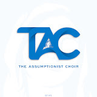
The Assumptionist ChoirMandaluyong City · Since 1968
Where Music Meets Purpose
Since 1968 we have led Sunday Mass at San Felipe Neri Parish, so the whole congregation can sing as one.
Our story
Formed with one idea: serving God through the ministry of music.
The Assumptionist Choir (TAC) began in 1968 at San Felipe Neri Parish in Mandaluyong City as a group of faithful students. Since then it has grown into a liturgical ensemble known for reverence, artistry and polished musicality.
Our mission hasn't changed: to lead the congregation at Sunday Mass in heartfelt sacred hymns. We follow Musicam Sacram, the Church's guidance on active participation through music.
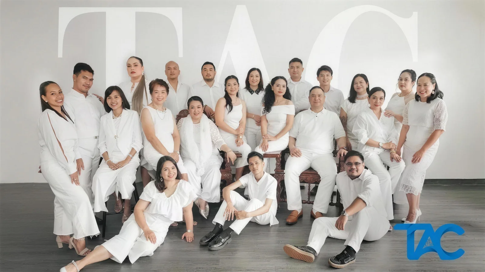
Active participation of every worshipper, at every Holy Mass.
Communal worship comes before personal recognition.
Every song is chosen to reach the hearts of those present, with reverence and unity.
We don't try to be the best choir compared with others. We try to be the best at helping the congregation worship.
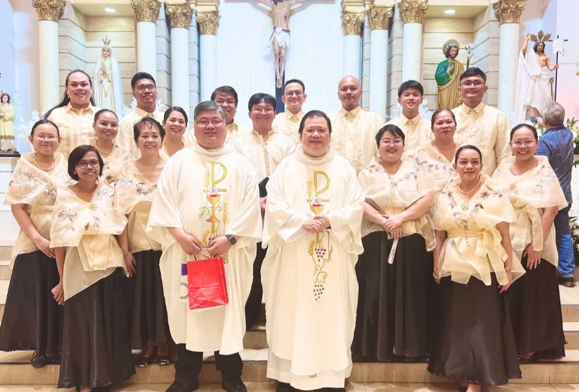
Join us this Sunday
Come sing with us. You don't need to be in the choir. The whole church is invited to join in.
San Felipe Neri ParishMoments
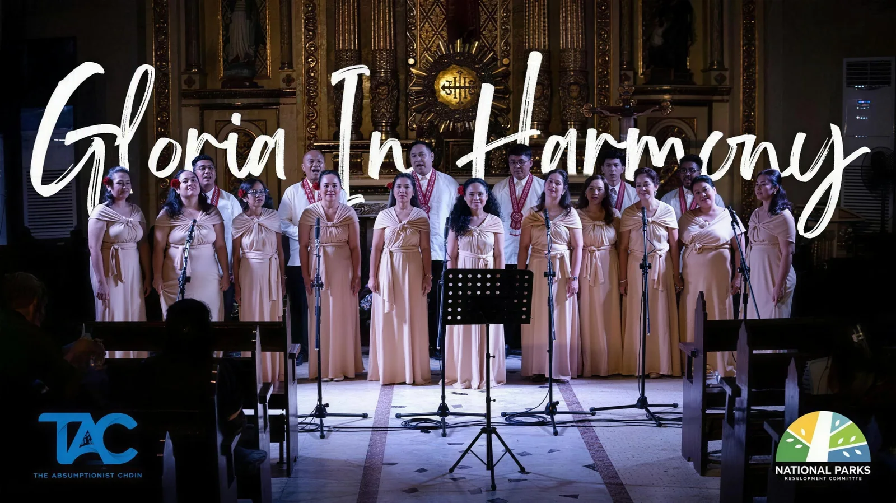
A free Christmas concert of sacred hymns, timeless carols and choral arrangements at historic Paco Park, Manila.
Featured by Philippine Information Agency · National Parks Development Committee
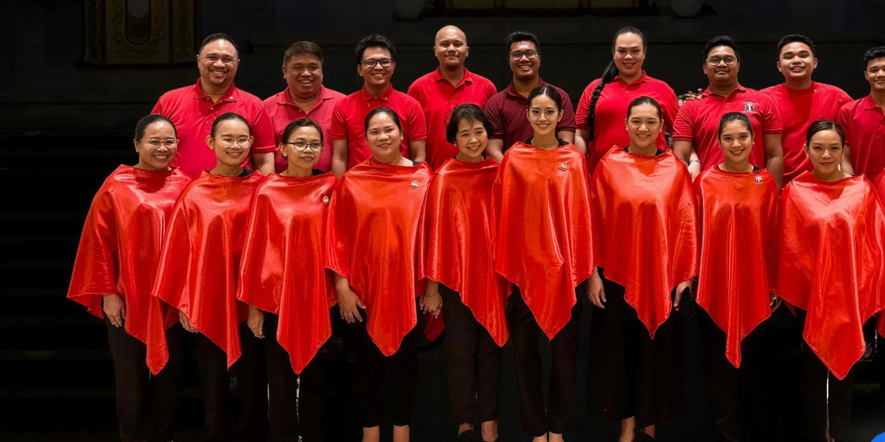
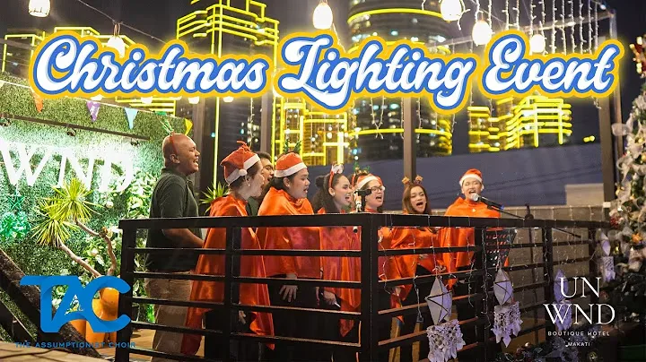
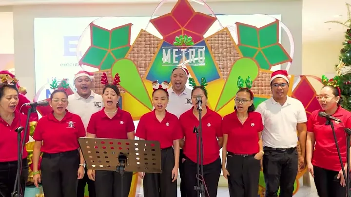
Also: Simbang Gabi services across several parishes, the S.A.L.A.M.I.N. Concert, and Marian celebrations within the archdiocese.
Watch our performances on YouTube →Beyond the choir loft
Rehearsals, outings, fundraisers and a lot of laughter. What we sing on Sunday is built during the rest of the week.
Good harmony isn't only heard. It's prepared.
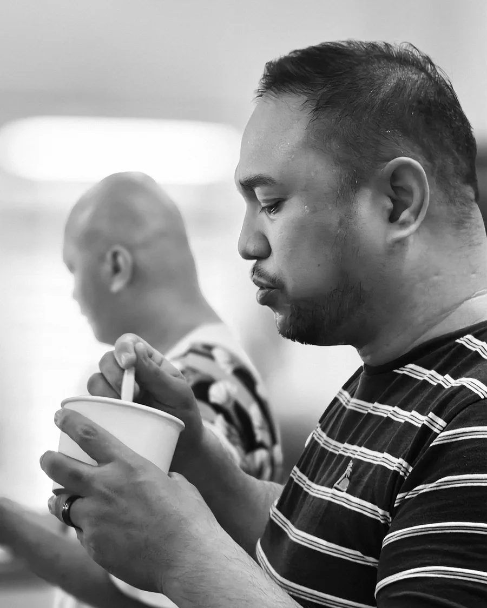
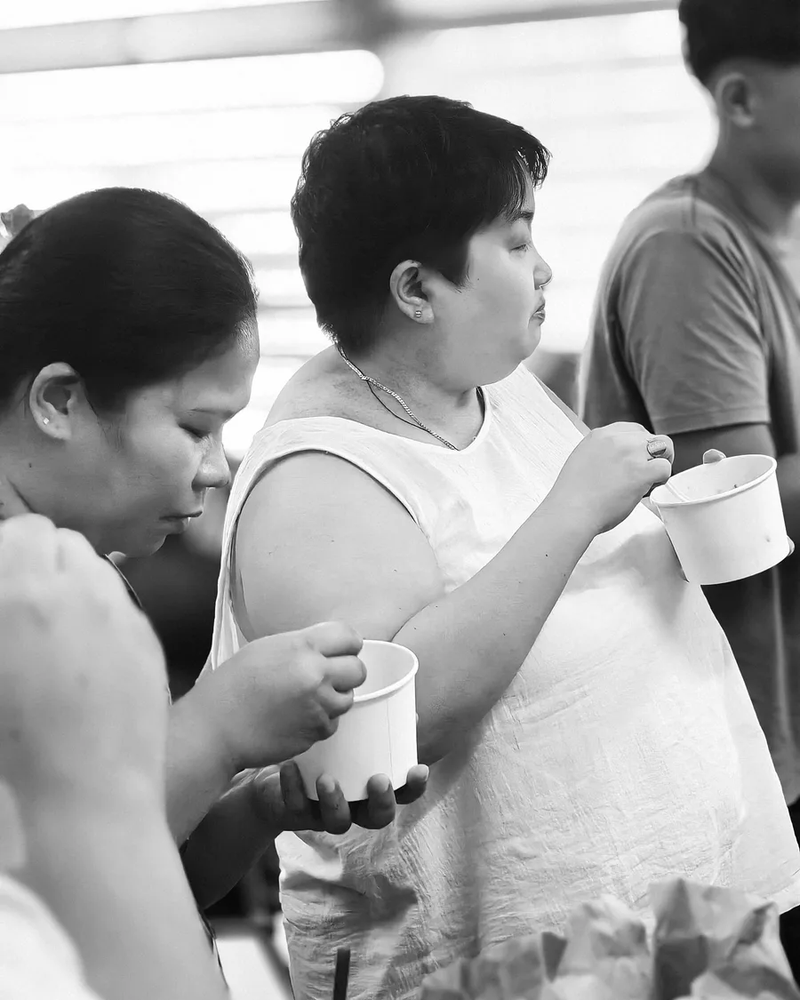
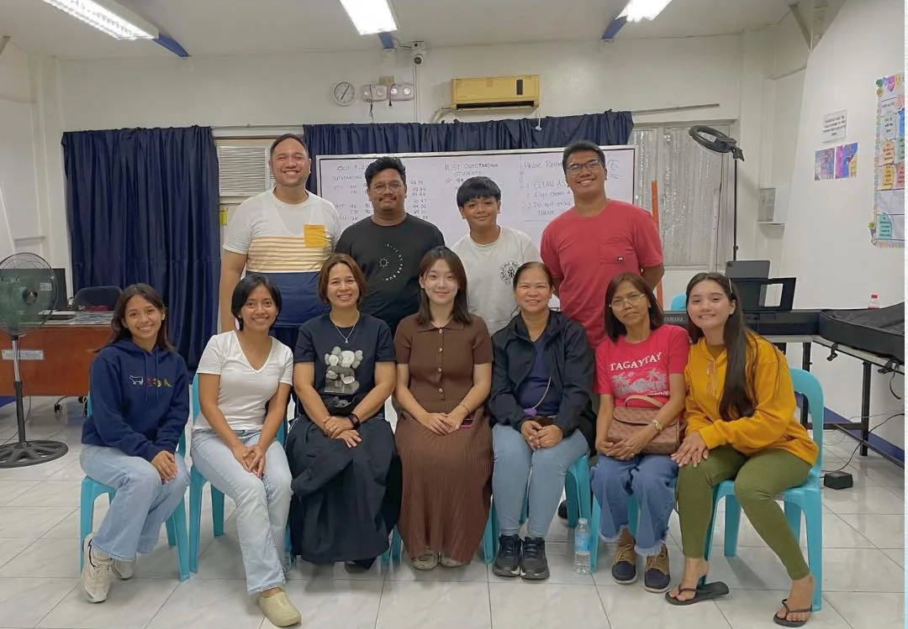
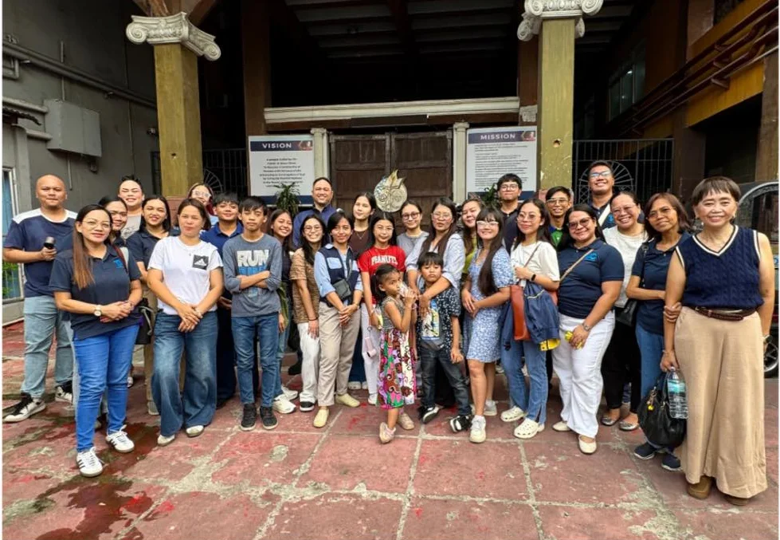
Now open for new members
Not just a choir. A family that sings, serves and grows together in faith and music.
San Felipe Neri Parish Church · 10:00 AM Sunday Mass
Book us
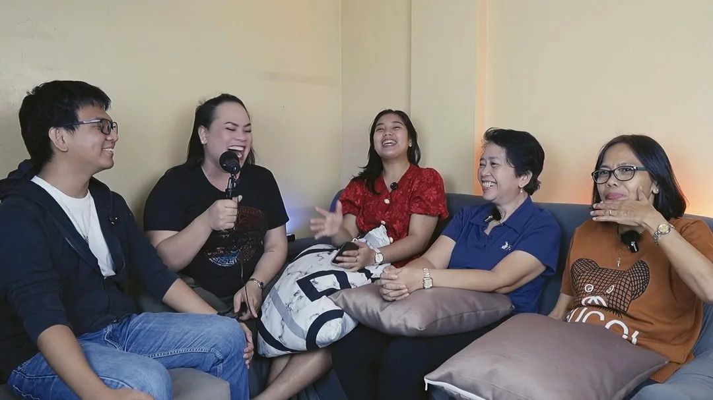
The podcast
A podcast by The Assumptionist Choir about life, music and meaningful conversations, from shared experiences to thought-provoking discussions.